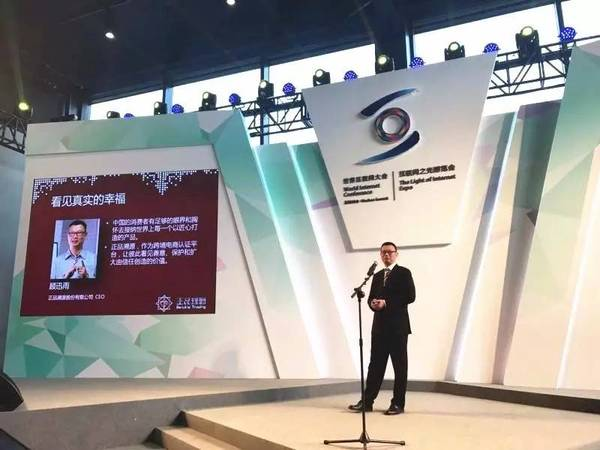
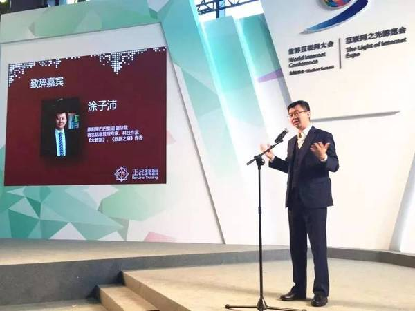
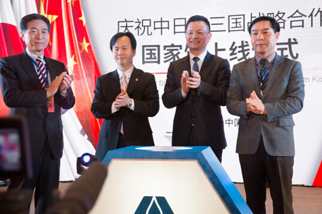

乌镇11月18日电 （记者 马悦） 随着“一带一路”战略的深入推进和中国跨境电商贸易额的持续增长，第三届世界互联网大会上，跨境电商的创新发展受到了广泛关注。11月18日，“正品溯源”平台举办全球发布会。通过这一平台，消费者使用APP扫码便可辨别商品真伪，还可查看商品生产、流通环节的多项信息，保障消费者的知情权。
该平台由正品溯源科技股份有限公司自主开发，采用我国自主知识产权的二维码（GM码）体系，同时结合区块链及Data Bank（数据银行）底层架构，为广大消费者和制造商提供专业的正品认证服务。凭借“正品溯源”体系，生产者，尤其是偏远地区的农业生产者，能把被认证的商品更好地销售出去，实现精准扶贫。
据介绍，未来，正品溯源科技股份有限公司还将打造国家级跨境“正品溯源”平台，覆盖多渠道跨境商品的生产消费链，保障优质正品良好的流通生态商业圈，不断提升客户端体验度，保障商品溯源的权威性、便携性与可靠性。
2016年11月16日至18日，国际互联网博览会“第三届世界互联网大会”在浙江乌镇举办。本届大会共设置了互联网经济、互联网创新、互联网文化、互联网治理、互联网国际合作5大板块，16个论坛（20个议题），来自110多个国家和地区的1600多位境内外嘉宾参加论坛，其中300多位知名专家学者、政府官员、企业家在各论坛上发表演讲，800多名记者参会报道。
随着“一带一路”战略的深入推进与中国跨境电商贸易额的持续增长，本届大会上，跨境电商的创新发展受到了广泛关注。
在11月18日举办的“正品溯源”全球发布会上，中国电子商会会长曲维枝、中国电子商会副秘书长彭李辉发表讲话。
中国电子商会会长 曲维枝女士
中国电子商会副秘书长 彭李辉先生
曲会长在讲话中指出，希望“正品溯源”平台在未来的发展中保证科学、客观、中立和可信，成为保障消费者权益和维护品牌商信誉的重要支撑，进而推动我国高品质的产品走出去，推动跨境电商的健康、可持续发展。
正品溯源CEO 顾迅雨先生
著名信息管理专家 涂子沛先生
发布会上，“正品溯源”平台以更强大的功能展现在公众面前。该平台采用我国自主知识产权的二维码（GM码）体系，同时结合区块链及Data Bank（数据银行）底层架构。消费者使用APP扫码便可辨别商品真伪，同时查看商品生产、流通环节的多项信息，保障消费者的知情权，让消费者看见真实的幸福。
曲维枝在“正品溯源”展台听取介绍
“正品溯源”平台由正品溯源科技股份有限公司自主开发，为广大消费者和制造商提供专业的正品认证服务。“正品溯源”以创新性互联网思维建立中国跨境电商的规范化标准，对接厂商与消费者，实现“经济与社会”价值双赢；协助净化市场假冒伪劣环境，改善中国市场国际形象。消费者买到放心商品的同时，制造者的价值也得到了认可。通过“正品溯源”体系，生产者，尤其是偏远地区的农业生产者，能把被认证的商品更好地销售出去，从根本上实现精准扶贫。
正品溯源科技股份有限公司将打造“国家级”跨境正品溯源平台，覆盖多渠道跨境商品的生产消费链，保障优质正品良好的流通生态商业圈；以技术为先导，坚持技术创新，不断提升客户端体验度，保障商品溯源的权威性、便携性与可靠性；建立平台为核心竞争力，遵循国家战略与市场化经济发展脉络，以互联网手段驱动跨境商品贸易发展，以实现全球化跨境正品溯源服务为终极目标。
正品溯源---看见真实的幸福
中国青年网乌镇11月18日电（记者 卢冠琼）11月15日-19日，第三届世界互联网大会“互联网之光”博览会在浙江乌镇举行。各种新奇有趣的高科技设备齐亮相,吸引众人目光。记者发现，随着“一带一路”战略的深入推进与中国跨境电商贸易额的持续增长，本届大会上，跨境电商的创新发展受到了广泛关注。
在三方战略合作框架协议下，两大成果落地：中日韩跨境正品认证平台和中日韩国家馆正式上线。资料图
18日，致力于跨境电商正品认证的“正品溯源”平台在博览会场馆举行全球发布会。该平台采用我国自主知识产权的二维码（GM码）体系，探索建立起跨境电子商务侵权假冒商品的追溯机制。
随着中国社会消费水平的升级，对更高品质产品的需求愈发明显。据商务部预测，2016年我国跨境电商进出口贸易额将达6.5万亿元人民币，未来几年跨境电商占中国进出口贸易比例将会提高到20%，年增长率将超过30%。
2015年11月1日，国务院总理李克强出席第六次中日韩领导人会议及第五届中日韩工商峰会。在三国领导人的见证下，中国电子商会、韩国在线购物协会、日本通信贩卖协会签署战略合作框架协议。“征集反馈意见、研讨应对方案，我们发现，目前在三国跨境电商中，产品质量和权益保护是消费者与平台最看重的问题。” 中国电子商会副秘书长彭李辉告诉记者，“从海外市场跨境购买商品，消费者心理不免有所忧虑。同时，维权备受考验。”
彭李辉表示，“一带一路”建设要求各国政府必须加强对跨境贸易的监管能力与形象，这对生产企业及其产品的品质保障和商业信誉，消费者的权益保护，提出了更高更新的要求。迫切需要通过一种独立的第三方商品认证机制和方式，进行真伪鉴别，追踪溯源，以保护各方权益。“正品溯源”平台应运而生。2016年4月12日，该跨境认证平台在中国国际电子商务博览会期间正式上线。
“一物一码”，以技术为先导，坚持技术创新，不断提升客户端体验度，保障商品溯源的权威性、便携性与可靠性。彭李辉介绍，此次，“正品溯源”应用第三届世界互联网大会的契机，向全球发布。他向记者演示，消费者在购买商品前，通过扫产品中的二维码，便可详细掌握商品的产商、物流引进路径等各项参数，确保购买正品。此外，若遇到产品质量不佳的情况，可向平台进行投诉。而“正品溯源”将对不诚信商家进行“灰名单”“黑名单”等系统评估，严格限定准入。
正品溯源CEO顾迅雨介绍平台技术及发展目标。
“遵循国家战略与市场化经济发展脉络，以互联网手段驱动跨境商品贸易发展，实现全球化跨境正品溯源服务是我们的终极目标。”负责开发平台的正品溯源科技股份有限公司CEO顾迅雨表示，“我们将打造‘国家级’跨境正品溯源平台，覆盖多渠道跨境商品的生产消费链，保障优质正品良好的流通生态商业圈。”他透露，为中日韩三国跨境电商护航只是第一步，接下来，“正品溯源”平台将在国内市场广泛推广运用，保障正品消费、维护消费者权益。未来，平台还将跟随“一带一路”的足迹走出去，服务沿线各国跨境贸易。
在“正品溯源”平台全球发布会上，中国电子商会会长曲维枝强调，希望这一平台在未来的发展中保证科学、客观、中立和可信，成为保障消费者权益和维护品牌商信誉的重要支撑，进而推动我国高品质的产品走出去，推动跨境电商的健康、可持续发展。
在11日开幕的“2016中国国际电子商务博览会”上，中日韩首个跨境正品溯源平台正式亮相上线，该平台的上线标志着中日韩三国的跨境商品有望实现源头可追溯，真伪可查询。
据了解，本届电商博览会由商务部、工信部指导，浙江省人民政府主办，中国国际电子商务中心、中国电子商会、义乌市人民政府共同承办，博览会主题为“电商换市、全球机遇”，聚集了来自11个国家的1100多家企业参展，同期将举办2016世界电商大会等20多项活动。
这一跨境正品溯源平台由工信部批准成立的中国二维码产业联盟牵头，采用自主知识产权的四标合一标准GM/CM码作为底层技术支撑，做到安全可控。该平台通过中日韩的推广应用成熟后，将进一步扩展到与中国跨境商品相关度高的国家和地区，如德国、新西兰、澳大利亚等。
据有关部门数据显示：美妆、母婴等跨境商品在中国跨境电商主打热销商品中占有重要地位，中日韩三国间的电商企业迅猛发展，庞大的市场缺乏对质量的监管，急需第三方认证平台来溯源和鉴别真伪。
中国电子商会常务副秘书长彭李辉介绍说，近年来随着跨境电子商务的快速发展，各种在中国境内销售的所谓进口产品真伪不一，既损害消费者权益，又破坏生产商的名誉。“有了这个平台，今后，企业可以通过后台数据掌握哪些区域消费扫码最多等信息，同时也能为打假提供线索。”
中日韩跨境正品溯源平台12日正式上线，中日韩三国的跨境商品有望实现源头可追溯，真伪可查询。中日韩跨境正品溯源平台是在浙江省义乌市举办的“2016中国国际电子商务博览会”上正式亮相的。该平台由工信部批准成立的中国二维码产业联盟牵头，采用自主知识产权的四标合一标准GM/CM码作为底层技术支撑，做到安全可控。据中国电子商会常务副秘书长彭李辉介绍，有了这个平台，企业可以通过后台数据掌握哪些区域消费扫码最多等信息，同时也能为打假提供线索。
新华社杭州４月１２日专电（记者张遥、屈凌燕）中日韩跨境正品溯源平台１２日正式上线，中日韩三国的跨境商品有望实现源头可追溯，真伪可查询。
中日韩跨境正品溯源平台是在浙江省义乌市举办的“２０１６中国国际电子商务博览会”上正式亮相的。该平台由工信部批准成立的中国二维码产业联盟牵头，采用自主知识产权的四标合一标准ＧＭ／ＣＭ码作为底层技术支撑，做到安全可控。
据中国电子商会常务副秘书长彭李辉介绍，近年来跨境电子商务快速发展，庞大的跨境电商消费市场需要权威的第三方认证平台溯源和鉴别真伪。“有了这个平台，企业可以通过后台数据掌握哪些区域消费扫码最多等信息，同时也能为打假提供线索。”彭李辉说。
据了解，本届电商博览会由浙江省人民政府主办，以“电商换市、全球机遇”为主题，同期举办２０１６世界电商大会等２０多项活动。